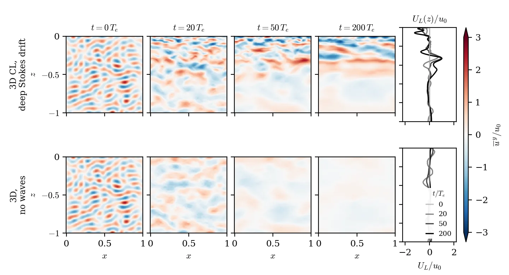
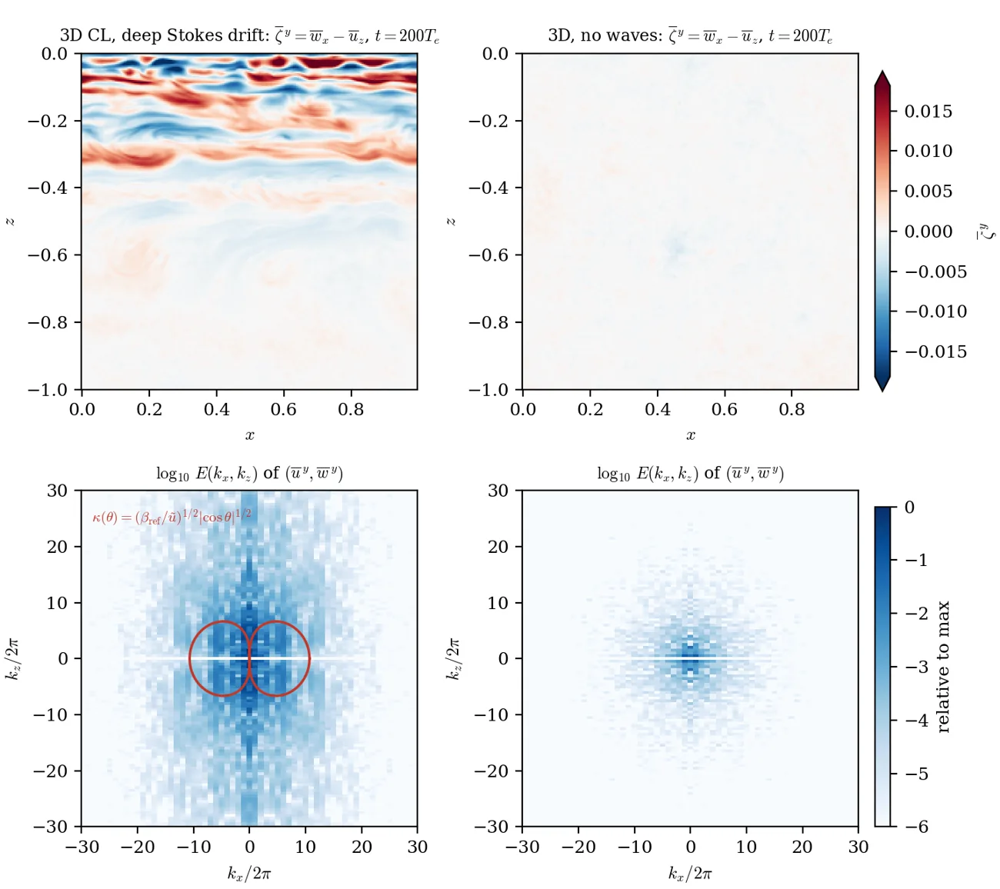
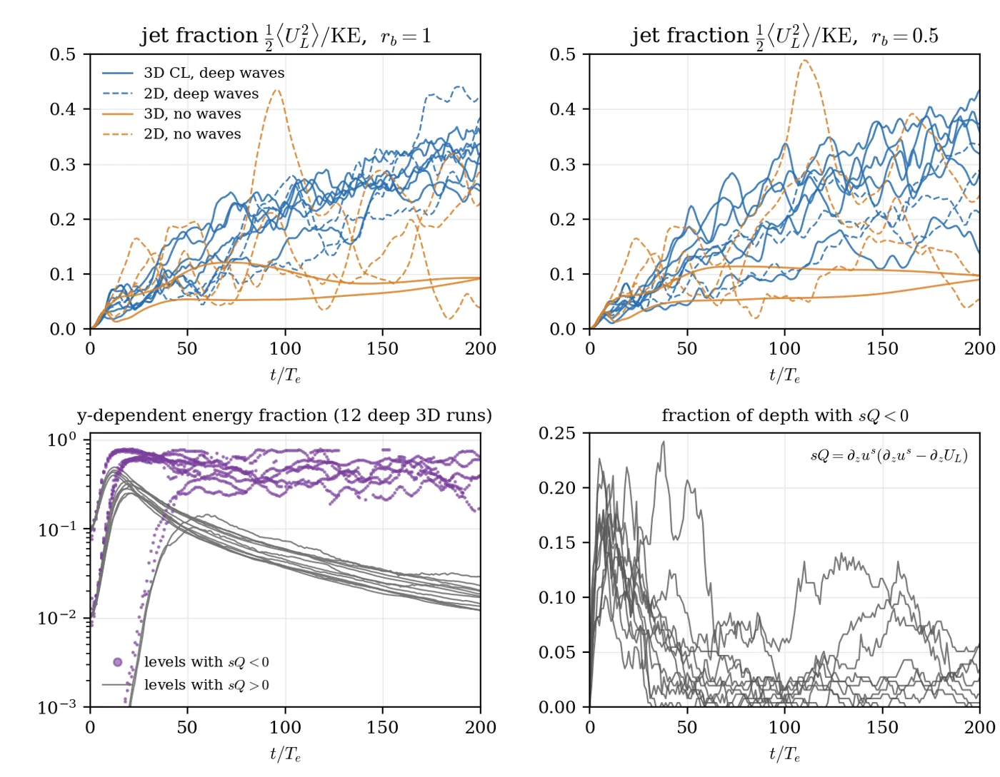

A deep-water Vallis-ring decay, rebuilt in 2D and 3D Craik–Leibovich (CL) dynamics, following the “deep” family of Wagner & Craig’s 2D study (REPORT_vallis2d.md, NumericalWaveTanks.jl branch glw/anti-stokes; their run code is not public). Unit box, periodic in x (and in y, Ly=0.5), free-slip walls at z=−1 and the surface z=0; prognostic Lagrangian-mean velocity; WENO-9 implicit LES, no closure; RK3. Stokes shear ∂zus=¼e8z, with the Lagrangian mean initially at rest (UE=−us). Narrow ring at 9 cycles, width one x-mode, kx=0 modes removed, u0=βref/(rbK02) with βref=½. 3D members add an exactly solenoidal y-dependent seed with ε3D of the ring energy. 3D grid 256×128×256, 2D grid 256×256, 200 eddy times Te.
Protocol. CPU tests, then a 12-run 2D calibration screen with a gate written before the screen finished (GATE.txt). rb=1 narrowly failed it (deep/no-wave jet fraction 1.9× against the required 2×, because one no-wave 2D run built a large mean flow); rb=0.5 passed. 3D production ran at rb=0.5 per the gate, and rb=1 was then added at the PI’s request. All 16 3D runs and 12 2D runs completed (28 total).
Caveat. After ≈50 Te the jet layer (z>−0.3) stays below 5% y-dependent energy (≤13% earlier, with the largest seed), so a pre-stated criterion (≥0.1 there) is not met. The accurate reading is “jets form in 3D CL, in a layer kept two-dimensional by CL stability”, not “jets form through strong 3D turbulence in the jet layer”. Single realizations per seed; jet fraction varies by seed.
Left pair: 3D, no waves. Right pair: 3D CL with deep Stokes drift. In each pair, the along-wave velocity u on the x–z plane y=0, and the x,y-mean UL(z,t) revealed up to the current time; both scaled by u0 on one color scale. rb=1, ε3D=10−2, seed 1, frames every 0.5 Te. The movie comes from reruns of d3-deep-rb1-e1e-2-s1 and d3-none-rb1-e1e-2-s1 with slice output added; the extra output times change the time steps slightly, so the runs differ from production in detail but not in their statistics: final jet fraction 0.323 vs 0.320 (CL) and 0.093 vs 0.093 (no waves), y-dependent energy 1.2% vs 1.2% and 53% vs 52%, and jet fraction within 0.007 of production at every sampled time.

ȳ-averaged along-wave velocity ūy(x,z)/u0 at t=0, 20, 50, 200 Te for 3D CL with deep Stokes drift (top) and 3D without waves (bottom); right, UL(z)/u0 at the same times. rb=1, ε3D=10−2, seed 1.

Top: ζ̄y=w̄x−ūz at 200 Te. Bottom: log10 energy spectrum of (ūy,w̄y) (even/odd extension in z), normalized by the larger maximum of the two runs. Red: κ(θ)=(βref/ũ)1/2|cosθ|1/2 with βref=½ (βeff=2e8z equals ½ at z≈−0.17) and ũ=(2KE)1/2.

Top: jet fraction for every run (blue: deep waves, orange: no waves; solid 3D, dashed 2D). Bottom left: y-dependent energy fraction in levels with sQ<0 (dots) and sQ>0 (lines) for all 12 deep 3D runs. Bottom right: fraction of the depth with sQ<0.
| run | dim | rb | seed | ε3D | jet fraction | anisotropy | 3D frac, z>−0.3 | 3D frac, z<−0.3 | max|UL|/u0 |
|---|---|---|---|---|---|---|---|---|---|
| d3-deep-rb0.5-e1e-6-s1 | 3D | 0.5 | 1 | 1e-06 | 0.318 | 0.41 | 0.006 | 0.073 | 0.99 |
| d3-deep-rb0.5-e1e-2-s1 | 3D | 0.5 | 1 | 0.01 | 0.373 | 0.37 | 0.006 | 0.058 | 1.18 |
| d3-deep-rb0.5-e1e-2-s2 | 3D | 0.5 | 2 | 0.01 | 0.436 | 0.51 | 0.007 | 0.072 | 1.40 |
| d3-deep-rb0.5-e1e-2-s3 | 3D | 0.5 | 3 | 0.01 | 0.136 | 0.57 | 0.005 | 0.048 | 0.73 |
| d3-deep-rb0.5-e1e-1-s1 | 3D | 0.5 | 1 | 0.1 | 0.286 | 0.71 | 0.007 | 0.052 | 1.03 |
| d3-deep-rb0.5-e1e-1-s2 | 3D | 0.5 | 2 | 0.1 | 0.357 | 0.41 | 0.007 | 0.097 | 1.13 |
| d3-none-rb0.5-e1e-2-s1 | 3D | 0.5 | 1 | 0.01 | 0.097 | -0.04 | 0.594 | 0.474 | 0.09 |
| d3-none-rb0.5-e1e-2-s2 | 3D | 0.5 | 2 | 0.01 | 0.090 | 0.04 | 0.783 | 0.626 | 0.09 |
| s2d-deep-rb0.5-s1 | 2D | 0.5 | 1 | – | 0.334 | 0.33 | 0.000 | 0.000 | 1.06 |
| s2d-deep-rb0.5-s2 | 2D | 0.5 | 2 | – | 0.289 | 0.32 | 0.000 | 0.000 | 1.47 |
| s2d-deep-rb0.5-s3 | 2D | 0.5 | 3 | – | 0.205 | 0.38 | 0.000 | 0.000 | 1.20 |
| s2d-none-rb0.5-s1 | 2D | 0.5 | 1 | – | 0.053 | -0.02 | 0.000 | 0.000 | 0.43 |
| s2d-none-rb0.5-s2 | 2D | 0.5 | 2 | – | 0.244 | -0.01 | 0.000 | 0.000 | 0.96 |
| s2d-none-rb0.5-s3 | 2D | 0.5 | 3 | – | 0.095 | -0.03 | 0.000 | 0.000 | 1.03 |
| d3-deep-rb1-e1e-6-s1 | 3D | 1 | 1 | 1e-06 | 0.260 | 0.70 | 0.003 | 0.051 | 1.41 |
| d3-deep-rb1-e1e-2-s1 | 3D | 1 | 1 | 0.01 | 0.320 | 0.62 | 0.004 | 0.030 | 1.22 |
| d3-deep-rb1-e1e-2-s2 | 3D | 1 | 2 | 0.01 | 0.337 | 0.57 | 0.003 | 0.042 | 1.37 |
| d3-deep-rb1-e1e-2-s3 | 3D | 1 | 3 | 0.01 | 0.356 | 0.52 | 0.003 | 0.040 | 1.57 |
| d3-deep-rb1-e1e-1-s1 | 3D | 1 | 1 | 0.1 | 0.301 | 0.69 | 0.006 | 0.025 | 1.18 |
| d3-deep-rb1-e1e-1-s2 | 3D | 1 | 2 | 0.1 | 0.319 | 0.53 | 0.004 | 0.047 | 1.31 |
| d3-none-rb1-e1e-2-s1 | 3D | 1 | 1 | 0.01 | 0.093 | -0.03 | 0.636 | 0.479 | 0.11 |
| d3-none-rb1-e1e-2-s2 | 3D | 1 | 2 | 0.01 | 0.091 | 0.05 | 0.796 | 0.602 | 0.10 |
| s2d-deep-rb1-s1 | 2D | 1 | 1 | – | 0.424 | 0.63 | 0.000 | 0.000 | 1.56 |
| s2d-deep-rb1-s2 | 2D | 1 | 2 | – | 0.250 | 0.49 | 0.000 | 0.000 | 1.66 |
| s2d-deep-rb1-s3 | 2D | 1 | 3 | – | 0.385 | 0.42 | 0.000 | 0.000 | 1.43 |
| s2d-none-rb1-s1 | 2D | 1 | 1 | – | 0.287 | 0.04 | 0.000 | 0.000 | 1.13 |
| s2d-none-rb1-s2 | 2D | 1 | 2 | – | 0.230 | -0.03 | 0.000 | 0.000 | 0.88 |
| s2d-none-rb1-s3 | 2D | 1 | 3 | – | 0.038 | -0.03 | 0.000 | 0.000 | 0.48 |
3D frac = y-dependent share of kinetic energy above and below z=−0.3. Anisotropy of the eddy part of the y-mean field, (kz2−kx2)/(kz2+kx2) energy-weighted.
Summary (all runs) · Gate and decision · README · Provenance · Source notes · time series and profiles in runs/ (one .timeseries.csv.gz per run; profiles for the four runs shown above) · source in the repository under scripts/deep-ring-3d